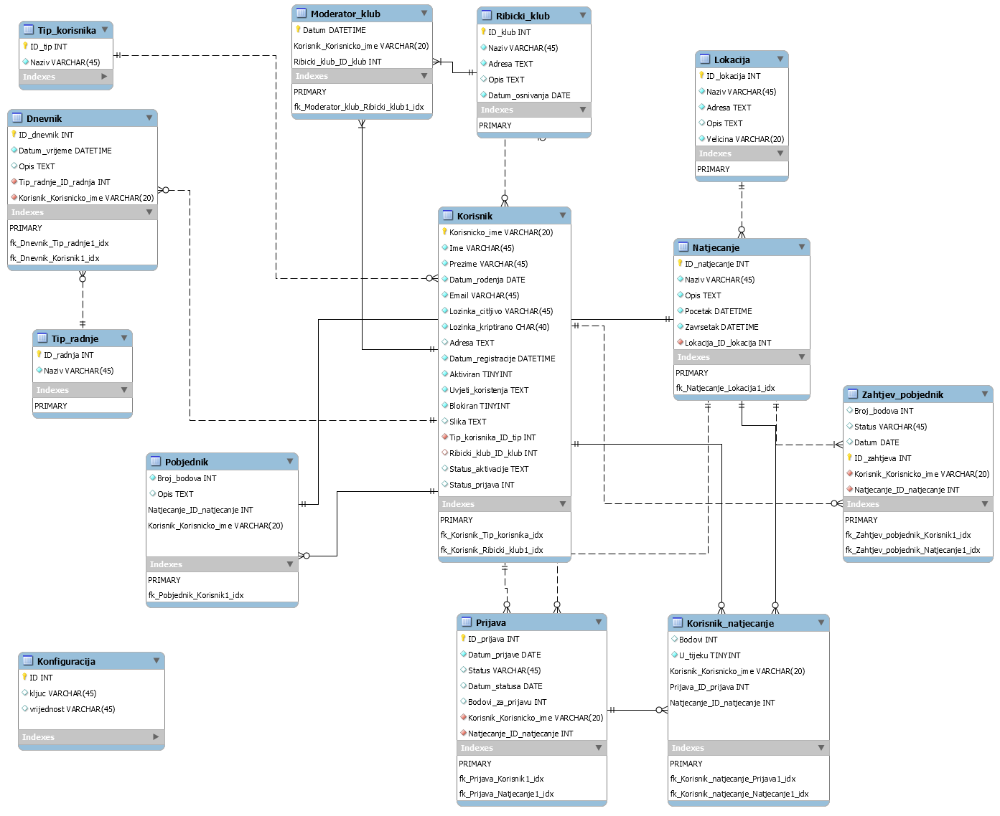
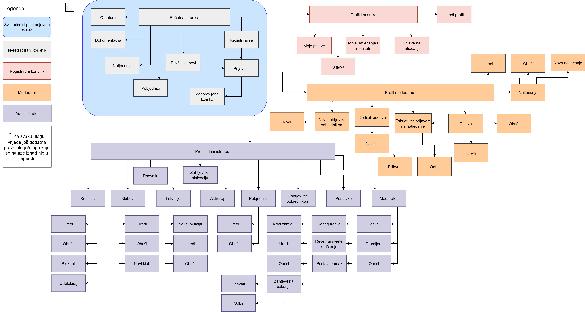

Opis projektnog zadatka
Sustav služi za kreiranje, prijavu i održavanje natjecanja za ribolov.
Uloge:
- Neregistrirani korisnik
- Registrirani korisnik/Natjecatelj
- Moderator/Organizator
- Administrator/Povjerenstvo
Detaljne upute:
Administrator
- Kreira ribički klub i dodjeljuje moderatore klubovima.
- Kreira lokacije (Drava, Sava, ….).
- Pregledava zahtjeve moderatora, ako ima samo jednog korisnika s najvećim brojem bodova samo njega može proglasiti pobjednikom. Korisnika se automatski obavještava mailom da je dobio nagradu. Ako ima više korisnika s jednakim brojem bodova, ima opciju da odabere pobjednika uz unos opisa zašto je njega odabrao
- Pregledava statistike zahtjeva prijava (odobrenih/odbijenih) u nekom razdoblju po ribičkom klubu uz mogućnost da se odabere klub i onda se dobiju podaci po pojedinoj lokaciji.
Moderator
- Kreira natjecanje pri čemu obavezno odabire lokaciju te unosi naziv, opis, početak i kraj natjecanja
- Pregledava i odobrava zahtjeve prijava. Odobren/odbijen zahtjev prijave ima datum i vrijeme odobravanja/odbijanja. Ako je korisnik već prijavljen u neko drugo natjecanje koje još traje zahtjev mu se samo može odbiti prijava
- Vidi stranicu s informacijom o sudionicima na natjecanjima, gdje unosi bodove sudionicima nakon završetka natjecanja te šalje zahtjev za proglašenjem pobjednika administratoru.
Registrirani korisnik
- Kreira zahtjev prijave na natjecanje uz prilaganje svoje slike. Dobiva bodove na temelju kvalitete i količine podataka ispunjenog zahtjeva (naziv, opis, …).
- Pregledava zahtjeve prijava na natjecanju sa statusom (prihvaćen, odbijen).
- Pregledava natjecanja na kojima sudjeluje zajedno sa popisom ostalih sudionika. Vidi stranicu sa svojim ostvarenim rezultatima.
Neregistrirani korisnik
- Može pretraživati natjecanja uz mogućnost filtriranja po ribičkom klubu. Svaki element ima dvije poveznice na klub i natjecanje
- Vidi informacije o natjecanju sa slikom pobjednika ako on postoji.
- Vidi informacije o klubu.
Opis projektnog rješenja
Rješenje ove problematike se razvijalo postepeno prateći upute koje su mi bile zadane u projektnom zadatku, nakon rješavanja osnovnog 'kostura' weba (zaglavlje,podnožje,početna,parking), krenuo sam u dodavanje kompliciranije dijela projekta vezan za prsitup skriptama za svaku pojedinu ulogu sustava. Nakon grubog dodavanja odgovarajućih stripti i dodavanja prava pristupa tim skriptama, prešla sam na doradu sitnih nedostatanaka koje sam svako malo uočavala testirajući napravljenu aplikaciju. U nastavku slijedi detaljan opis mog projektnog rješenja za aplikaciju za organiziranje i praćenje natjecanja u ribolovu.
ERA model
Struktura direktorija i korištene skripte
CSS
- iilisevic.css - sadrži stilske upute korištene u cijelom projektu
JS
- hrvatski.txt - skripta za uporabu DataTables na hrvatskome jeziku
- iilisevic.js - koristi se za uključvanje DataTables mogućnosti na pojedine tablice projekta
- jqRegistracija.js - jQuery, koristi se pri registaciji i promjeni podataka gdje se provjerava jesu li podaci uneseni u odgovarajućem obliku
HTML
- index.html - sadrži usmjeravanje na index.php tj. početak projektnog rješenja
- dokumentacija.html - sadrži dokumentaciju vezanu za ovaj projekt
PHP
- _header.php - iniciranje i učitavanje Smarty predloška _header.tpl
- _navigacija.php - dinamičko kreiranje izbornika ovisno o vrsti prijave, učitava _navigacija.tpl
- index.php - početna stranica ove web aplikacije, sadrži poruku dobrodošlice preko svog predloška
- _poruka.php - učitava predložak i dodaje mu poruku za ispis
- aktivacija.php - koristi se za aktivaciju korisničkog računa
- aktiviraj_korisnika.php - koristi se za aktiviranje zaključanog korisničkog računa od strane administratora sustava
- blokiraj_korisnika.php - koristi se za blokiranje korisnika od strane administratora sustava
- odblokiraj_korisnika.php - koristi se za odblokiravanje blokiranih korisnika od strane administratora sustava
- delete_klub.php - koristi se za brisanje ribičkog kluba od strane administratora sustava
- delete_korisnik.php - omogućava brisanje korisnika od strane administratora sustava
- delete_lokacija.php - koristi se za brisanje lokacija od strane administratora sustava
- delete_moderator.php - omogućava uklanjanje moderatora za odabrani ribički klub od strane administratora
- delete_natjecanje.php - omogućava moderatoru i administratoru sustava brisanje natjecanja
- delete_pobjednik.php - daje mogućnost administratoru sustava brisanje pobjednika za odabrano natjecanje
- delete_prijava.php - omogućava administratoru sustava brisanje odabrane prijave na natjecanje
- delete_zahtjev.php - daje mogućnost brisanja zahtjeva za natjecanje moderatoru i administratoru sustava
- dodaj_klub.php - omogućava administratoru sustava kreiranje novog ribičkog kluba
- dodaj_lokaciju.php - koristi se za dodavanje nove lokacije od strane administratora sustava
- dodaj_natjecanje.php - omogućava kreiranje novoga natjecanja moderatoru i administratoru sustava
- dodijeli_bodove.php - omogućava pregled natjecatelja i njihovih bodova na natjecanjima koja nemaju proglašenoga pobjednika, uvid je moguć za uloge moderatora i administratora sustava
- dodijeli_bodove_korisniku.php omogućava dodjeljivanje bodova odabranom natjecatelju, bodove mogu dodjeljivati moderator i administrator sustava
- dodijeli_moderatora.php - omogućava administratoru sustava da dodijeli moderatora za odabrani ribički klub
- edit_klub.php - nudi administratoru sustava mogućnost uređivanja postojećih podataka za odabrani ribički klub
- edit_korisnik.php - nudi administratoru sustava mogućnost uređivanja postojećih podataka o odabranom korisniku uključujući i promjenu njegove uloge u sustavu (dodjeljivanje uloge moderatora ili administratora)
- edit_lokacija.php - služi za promjenu postojećih podataka o odabranoj lokaciji za ulogu administratora sustava
- edit_moderator.php - omogućava administratoru sustava promjenu moderatora za odabrani ribički klub
- edit_natjecanje.pho - koristi se za promjenu postojećih podataka o natjecanju od strane moderatora ili administratora sustava
- edit_pobjednik.php - koristi se za promjenu podataka o pobjedniku na natjecanju od strane administratora sustava
- edit_prijava.php - nudi mogućnost promjene podataka o prijavi na natjecanje od strane administratora sustava
- edit_zahtjev.php - omogućava administratoru sustava promjenu podataka o zahtjevu za pobjednika
- editiraj.php - omogućava registriranom korisniku promjenu podataka o vlastitom korisničkom računu
- greske.php - učitava predložak i ovisno o grešci ispisuje odgovarajuću poruku
- klubovi.php - sadrži pregled podataka o svim ribičkim klubovima
- lokacije.php - sadrži pregled podataka o svim lokacijama
- moderatori.php - sadrži podatke o tome koji je moderator dodijeljen kojem ribičkom klubu
- moja_natjecanja.php - omogućava prijavljenom korisniku uvid u njegova natjecanja i postignute rezultate
- moje_prijave.php - omogućava prijavljenom korisniku uvid u njegove prijave na natjecanja te statuse prijava
- natjecanja.php - sadrži podatke o svim natjecanjima
- novi_zahtjev_za_pobjednikom.php - omogućava moderatoru automatsko kreiranje zahtjeva za pobjednikom na odabranom natjecanju po najvećem postignutom broju bodova
- odbij_prijavu.php - koristi se za odbijanje prijave na natjecanje od strane moderatora ili administratora sustava
- odbij_zahtjev.php - koristi se za odbijanje zahtjeva za pobjednikom od strane administratora sustava
- pobjednici.php - sadrži podatke o svim pobjednicima na natjecanjima
- postavke.php - sadrži putanje za konfiguriranje sustava ili resetiranje uvjeta korištenja od strane administratora sustava
- prihvati_prijavu.php - koristi se za prihvaćanje prijave na natjecanje od strane moderatora ili administratora sustava
- prihvati_zahtjev.php - koristi se za prihvaćanje zahtjeva za pobjednikom od strane administratora sustava
- prijava_na_natjecanje.php - omogućava prijavljenom korisniku prijavu na odabrano natjecanje
- prijave.php - sadrži podatke o svim prijavama na natjecanja
- profil.php - omogućava prijavljenom korisniku pregled i uređivanje podataka o sebi
- resetriraj_uvjete.php - nudi mogućnost aministratoru sustava da resetira uvjete korištenja te se korisnicima šalje obavijest na e-mail o ponovnom prihvaćanju uvjeta korištenja
- uvjeti_koristenja.php - obaviještava korisnika o prihvaćanju uvjeta korištenja
- zahtjev_za_pobjednikom.php - omogućava kreiranje novog zahtjeva
- zahtjevi_na_cekanju.php - prikazuje sve zahtjeve za pobjednikom koji još nisu prihvaćeni ili odbijeni
- zahtjevi_za_aktivaciju.php - prikazuje sve zahtjeve za aktivaciju koji nisu procesuirani
- zahtjevi_za_pobjednikom.php - sadrži podatke o svim zahtjevima za pobjednikom
- zahtjevi_za_prijavu.php - sadrži podatke o prijavama za natjecanje koje još nisu prihvaćene ili odbijene
- konfiguracija.php - stranica kojoj pristupa samo administrator sustava i može mjenjati konfiguraciju sustava
- korisnici.php - ispis podataka o korisnicima koju vidi samo administrator sustava i ima razne dozvole nad tim računima
- odjava.php - omogućuje odjavu iz sustava
- dnevnik.php - sadrži tabelarni ispis log sustava koji može vijdeti samo administrator sustava
- prijava.php - sadrži funkcionalnosti vezane uz prijavu u sustav
- registracija.php - učitava predložak za registraciju i provjerava validsnost unosa
- zaboravljena.php - sadrži funkcionalnosti vezane uz zaboravljenu lozinku i način povratka iste
- privatno
- korisnici.php - ispis svih korisnika sustava, zaštićen pristup htaccessom
- .htaccess - omogućava zaštićen pristup do direktorija privatno
- .htpasswd - omogućava zaštićen pristup do direktorija privatno
- klase
- baza.php - klasa koja se koristi za pristup i u konačnici rad s bazom podataka
- dnevnik.php - sadrži fukncije za unos podataka o radu sustava i akcijama korisnika
- mogucnost.php - sadrži funkcije za dohvat konfiguracijskih podataka sustava
- sesija.php - skripta koja se koristi u svim datotekama, a sadrži funkcije za provjeru prijave
TPL i direktorij predlosci
- _footer.tpl - predložak za sekciju podnožja korišten na svim stranicama
- _header.tpl - predložak za sekciju zaglavlja korišten na svim stranicama
- _navigacija.tpl - predložak za sekciju navigacija korišten na svim stranicama
- edit_profil.tpl - predložak za promjenu korisničkih podataka
- index.tpl - predložak za početnu stranicu
- dodaj_klub.tpl - predložak za dodavanje novog ribičkog kluba
- dodaj_klub_.tpl - predložak za izmjenu podataka o ribičkom klubu
- dodaj_lokaciju.tpl - predložak za dodavanje i izmjenu podataka o lokaciji
- dodaj_moderatora.tpl - predložak za dodjeljivanje moderatora ribičkom klubu
- dodaj_natjecanje.tpl - predložak za dodavanje i izmjenu podataka o natjecanju
- edit_klub.tpl - predložak za izmjenu podataka o odabranom ribičkom klubu
- edit_moderator.tpl - predložak za promjenu moderatora za odabrani ribički klub
- edit_pobjednik.tpl - predložak za promjenu podataka o pobjedniku natjecanja
- edit_prijava.tpl - predložak za izmjenu podataka o prijavi na natjecanje
- edit_zahtjev.tpl - predložak za izmjenu podataka o zahtjevu za pobjednikom na natjecanju
- postavke.tpl - predložak za konfiguraciju postavki sustava
- prihvati_prijavu.tpl - predložak za unos bodova za prijavu na natjecanje
- prihvati_zahtjev.tpl - predložak za unos opisa zašto je određeni korisnik odabran za pobjednika na natjecanju
- prijava_na_natjecanje.tpl - predložak za popunjavanje prijave na natjecanje
- profil.tpl - predložak za prikazivanje informacija o profilu prijavljenog korisnika
- registracija_1.tpl - predložak kojim administrator mijenja podatke o korisniku
- ssp.tpl - predložak za sortiranje i pretraživanje dnevnika
- ssp_sve.tpl - predložak za sortiranje podataka na svim stranicama
- poruka.tpl - predložak za ispis poruke korisniku ili prikaz nekih podatka
- prijava.tpl - predložak za prijavu u sustav
- registracija.tpl - predložak za unos podataka za registraciju
- zaboravljena.tpl - predložak za dohvat zaboravljene lozinke
Navigacijski dijagram
Popis alata i tehnologija
Korišteni alati:
- Netbeans
- phpMyAdmin
- Mozilla Firefox
- MySql Workbench
- Google Chrome
- Notepad ++
- draw.io
- Paint
Korištene tehnologije:
- HTML 5
- PHP
- CSS
- JavaScript - jQuery
- Smarty
- MySql
Korištene vanjske biblioteke
jQuery
- Lokacija: http://ajax.googleapis.com/ajax/libs/jquery/1.11.0/jquery.min.js
- Opis: vanjska biblioteka za korištenje dodatka za JavaScript
DataTables
- Lokacija: https://cdn.datatables.net/1.10.11/js/jquery.dataTables.min.js
- Opis: vanjska biblioteka za korištenje DataTables
recaptcha
- Lokacija: https://www.google.com/recaptcha/api.js\
- Opis: vanjska biblioteka za provjeru kontrolnog niza znakova za sprečavanje automata
Smarty
- Lokacija: Smarty/...
- Opis: vanjske biblioteke za korištenje predložaka u projektu